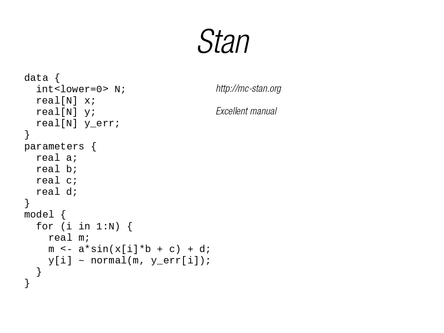

 N; real[N] x; real[N] y; real[N] y_err; } parameters { real a; real b; real c; real d; } model { for (i in 1:N) { real m; m <- a*sin(x[i]*b + c) + d; y[i] ~ normal(m, y_err[i]); } } http://mc-stan.org Excellent manual">